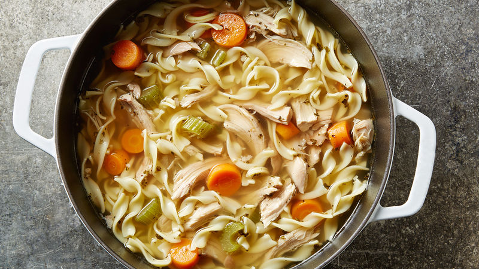

Chicken Noodle Soup

Description
A classic, simple, and delicious soup!
Ingredients
- 1 tbs minced onion
- 1 1/2 cups of chopped carrots
- 1 cup of chopped celery
- 2 tbs butter
- 2 32oz cartons of chicken broth
- 1/4 tsp minced garlic
- 1/4 tsp black pepper
- 1/2 tsp oregano
- 1/2 tsp basil
- 1 bay leaf
- 2 cups of cooked shredded chicken
- 9oz of egg noodles (3/4 of a 12oz package)
Steps
- In a large pot, melt butter over medium heat.
-
Add in carrots, celery, minced onion, and garlic. Saute for 5 minutes or
until veggies are semi tender.
- Stir in the rest of the spices, and pour in all of the broth.
-
Bring broth to a low boil, and then mix in the shredded chicken and
noodles.
- The soup is done when the noodles are cooked through!